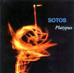

| Artist: | Sotos |
| Title: | Platypus |
| Label: | Cuneiform RUNE 164 |
| Length(s): | 68 minutes |
| Year(s) of release: | 2002 |
| Month of review: | [02/2003] |
| 1) | Maelstrom Part 1 | 5.20 |
| 2) | Maelstrom Part 1 | 4.30 |
| 3) | Maelstrom Part 1 | 4.19 |
| 4) | Maelstrom Part 1 | 5.01 |
| 5) | Maelstrom Part 1 | 9.59 |
| 6) | Maelstrom Part 1 | 7.18 |
| 7) | Maelstrom Part 1 | 4.31 |
| 8) | Wu | 27.37 |
All sound samples from Platypus appear here by permission of Cuneiform Record s.
We move into part two with some more relaxed melodies. This comes close to minimalism, and the opening melody sounds familiar. In fact, it reminds me very much of Don't Stand So Close To Me of the Police, but in a classical setting of course. This song has more of an up-and-down movement to the music, softer passages alternating with louder ones. As a composition I like this one less than the previous one, mainly because the connections between the different parts seem too loose. The ending consists mainly of harsh effects, harsh on the ears.
Lightfooted jazzy drums and etheric guitars open the third movement. Again, the band shows a tendency to run and rerun their melodies with minor variations. What I miss here is some kind of energy. I mean I can appreciate all the subtle wanderings and the like, but the danger of this is that the great jazzrock problem (a tendency to wander when staying put would also do the job) crops up. Or maybe, it is simply a lack of appealing melodies that is the main problem here. The violin gets really panicky toward the end.
The fourth part continues with a guitar playing in morse code. This gives the song a manic feel, but for the remainder, this in fact a rather restful piece. On the whole there is still a certain contrivedness to it all, something that prohibits me from saying, Yes, this is it! The music continues to be somewhat distant in a jazzrock sort of way.
The fifth part is the most lengthy one, opening with strings (or should I say string?). The chamber orchestra feel is very strong here, more melody is apparent. Then the music dies down entirely to start all over with a subtle melody, which is accompanied later by a sad violin. Everything proceeds in an understated fashion, reminding of the more introspective side of King Crimson, but also Anekdoten. The music seems to be building for something. I am waiting for release. The music continues to build slowly with repetitive guitar notes and ever more pronounced drumming, lined by long notes on violin. The break when it comes is quite abrupt, and not a more forceful continuance. The violin wails forward, the cello and guitar are sawing through their melodies. Okay, but as a lover of climaxes I was expecting a bit more.
Part six finds us with loose rhythmic exertions, silence and then the violin setting in again. At once we break into a manic passage where the drummer hacks, the guitar and violin add the neurotic note. There is something of the Balkan in it all, a Middle European folkiness, or maybe it is just the presence of violin. King Crimson is close by on this one, but there is enough of the band itself to not sound like a copy. The violin and cello continue the chamber orchestra feel of it all, no matter how loud the guitar becomes. Chaos rulez. The song has a repetitive, speedy and low key ending.
The final part is a slow opener again. It takes some time before we really hear anything. Soft bells, soft violin, this is a sad one. Bass is softly resounding in the back.
The second track is almost half an hour of Wu, all in one single chunk. It arises with a clap. After that we have mainly a string of effects trying to build up a tension or atmosphere of a kind. The bass and cello and occasional cymbals are continuing in subdued fashion, softly, carefully. To my ears, it all seems to take a bit too long, the slow build up. Or maybe it is the danger that there will not be an outburst along the way (okay, we are not even halfway yet), but on the other hand this might make it interesting again. However past twelve minutes we get some speed up at least, with the drummer playing his rolls, and the violin adding its urgency, the ghost of King Crimson growing near. Activity level is now quite a bit higher it seems although the violin and the cello are still playing long drawn out notes. The nervous backdrop adds nicely to the tension. I still think the music lacks in emotional appeal, though. In a way, it is more a soundtrack to accompany a movie of some kind, lending colour. Around the 17 minute mark the guitar interjects some hallucinating chords adding more and more to the tension. The band goes all out here, and in a good way. The plodding ending is almost irreverent.